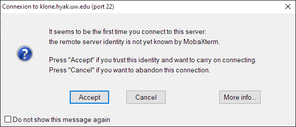

SSH#
SSH (secure shell) is the primary method for connecting to and interacting with UW HYAK clusters from a command-line interface (CLI).
Important
Connections to UW HYAK are authenticated with your UW NetID credentials and Duo for two-factor. Alternative login methods, including SSH key authentication, cannot be used to login.
Tip
Use an SSH client that supports session multiplexing/sharing to reuse an active session without two-factor authentication.
Installing an SSH client#
Note
macOS, most Linux distributions, and (newer builds of) Windows 10/11 already include OpenSSH client by default.
Pick your platform and install an SSH client:
Open a terminal and install OpenSSH client with your distribution’s package manager.
Distribution |
Command |
|---|---|
Ubuntu/Debian/Linux Mint |
|
RHEL/CentOS/Fedora/Rocky |
|
SUSE |
|
Alpine |
|
Arch |
|
To setup session sharing, create a new host entry to your local computer’s ~/.ssh/config
with a text editor:
~/.ssh/config
Host klone.hyak.uw.edu
HostName %h
ControlPath ~/.ssh/%r@%h:%p
ControlMaster auto
ControlPersist 3600
macOS provides SSH commands by default and are accessible from command-line with the native macOS Terminal application.
To setup session sharing, create a new host entry to your local computer’s ~/.ssh/config
with a text editor:
~/.ssh/config
Host klone.hyak.uw.edu
HostName %h
ControlPath ~/.ssh/%r@%h:%p
ControlMaster auto
ControlPersist 3600
There are many SSH clients available for the Windows platform. Here is a short table comparing features provided by each SSH client:
SSH Client |
Port-Forwarding |
X11 |
Session Sharing |
Interface |
File Transfer Interface |
|---|---|---|---|---|---|
Supported |
Requires X11 Server[^x11] |
Unsupported |
CLI |
CLI |
|
Supported |
Supported |
Unsupported |
GUI/CLI |
GUI/CLI |
|
Supported |
Requires X11 Server[^x11] |
Supported |
GUI |
CLI |
|
Supported |
Requires X11 Server[^x11] |
Unsupported |
CLI |
CLI |
|
Supported |
Supported |
Supported |
CLI |
CLI |
Note
PuTTY’s plink.exe tool is not suited for interactive sessions as it cannot handle many key inputs
(arrow keys for cursor movement, backspace for character deletion).
Session Sharing in PuTTY
Check Share SSH Connection if possible in the PuTTY Configuration window under Connection->SSH:
Save a PuTTY profile under Session with the hostname set to UWNetID@klone.hyak.uw.edu:

While PuTTY maintains an active session with session sharing enabled, all (GUI/CLI) PuTTY tools can reuse the active authenticated session as long as the terminal window remains open and active. If all sessions close, authentication will be required.
To create a new terminal window, right click the title bar of an active terminal window, then click on Duplicate Session.
To reuse an active session with CLI tools, specify the name of the saved PuTTY profile in place of
UWNetID@klone.hyak.uw.edu.
Connecting via SSH#
Open a terminal instance.
Note
Windows users should open PowerShell console, or install and use Windows Terminal from the Microsoft Store app.
Connect to HYAK Klone cluster with
sshcommand with your UW NetID:
ssh UWNetID@klone.hyak.uw.edu
If prompted to “continue connecting”, type ‘yes’ and press enter.
Login with your NetID password and authenticate with Duo.
If successful, the login node’s command prompt should appear.
Open PuTTY:

Check Share SSH Connection if possible under Connection->SSH:
Under Session, set the hostname to
UWNetID@klone.hyak.uw.eduand save the profile asKlone:
Press Open at the bottom of the configuration window to start the connection.
Login with your NetID password and authenticate with Duo.
If successful, the login node’s command prompt should appear.
Open MobaXterm:

Click the Session icon in the top left corner.
Select SSH under the Session settings window, then do the following:
set the remote host to
klone.hyak.uw.educheck Specify username and specify your UW NetID
Press OK at the bottom of the window to start the connection.
Press Accept if prompted to trust the identity of the remote host:

Login with your NetID password and authenticate with Duo.
If successful, the login node’s command prompt should appear.
Transferring files to/from HYAK#
Note
Klone and Mox clusters have separate network attached storage. Copying to one cluster will not copy to the other.
scp is an OpenSSH client utility for copying files and directories to/from a remote target. The
general syntax has the following form:
scp [-r] <SOURCE_PATH> UWNetID@klone.hyak.uw.edu:<DESTINATION_PATH>
scp [-r] UWNetID@klone.hyak.uw.edu:<SOURCE_PATH> <DESTINATION_PATH>
To copy a file to Klone at some path, run:
scp /path/to/my/file UWNetID@klone.hyak.uw.edu:/gscratch/mylab/
To copy a file from Klone at some path, run:
pscp is a CLI utility (provided by a standard PuTTY installation) for copying files.
pscp [-r] <SOURCE_PATH> UWNetID@klone.hyak.uw.edu:<DESTINATION_PATH>
pscp [-r] UWNetID@klone.hyak.uw.edu:<SOURCE_PATH> <DESTINATION_PATH>
Note
pscp does not support the use of the tilde (~) as a shortcut to the home directory. By default,
relative paths always start from home directory anyways.
# copy file to home directory
pscp.exe c:\path\to\my\file UWNetID@klone.hyak.uw.edu:
Tip
pscp can reuse/share an active SSH connection without re-authorization if using a saved PuTTY
profile with Share SSH Connection if possible enabled.
To send a file to Klone at some path, run:
pscp.exe c:\path\to\my\file UWNetID@klone.hyak.uw.edu:/gscratch/mylab/
Alternatively, we can use the name of the saved PuTTY profile (Klone for this example) to reuse
an active connection to copy a file to Klone:
pscp.exe c:\path\to\my\file Klone:/gscratch/mylab/
To copy a directory to Klone, use the -r argument to copy directories and files recursively:
pscp.exe -r c:\path\to\my\directory\ Klone:/gscratch/mylab/
TODO
TODO